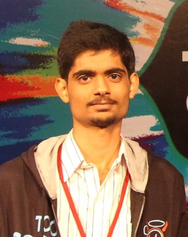

|
 |
Ajay Brahmakshatriya
Research Fellow
Programming Languages & Systems Group
Microsoft Research India
I am a research fellow in the Programming languages & Systems group at Microsoft Research, India, where I work with Dr. Akash Lal, Dr. Aseem Rastogi and Prof. Deepak Garg on the problem of tracking confidential data in low level languages like C and preventing it from explicitly leaking in the presence of active attackers. Previously, I was an undergraduate student at IIT Hyderabad where I obtained my B. Tech in Computer Science and Engineering(Honors) in 2016.
You can find a link to my resume here.
|